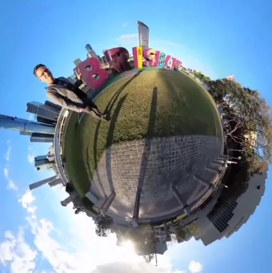

Free Fourth-Album Teaser
Untitled fourth album teaser video
This sits here as a free enticement into the fourth-album world before the paid download packaging asks anything from the listener.
A holding page for songs that have not found their album yet.
